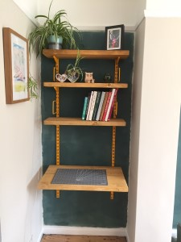
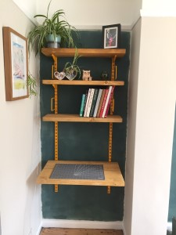

Toby's Website
hey Toby here
TOBY
Hi I am toby, I am 9 and this is my website
Popular Post
LOCKDOWN FUN!
Clapping for the NHS , every Thursday
We clap for the NHS and key workers to say thank you for keeping us safe during the pandemic.
In this picture, I am wearing my cubs uniform because it was St.Georges day and we usually parade but this year we couldn't as it is not safe to meet in big groups. Everybody in our street comes out and makes noise, we get to bang saucepans really loudly!!!
VE day celebrations
75th anniversary of the end of second world war in Europe, 08/05/2020

We had a street party, we decorated the front of our house and made our own chocolate biscuits -(the twins really enjoyed these)
In the morning, we made bunting, had balloons,party hats,medals put pictures up, listened to music from the 40s and 30s and the girls dressed up in pretty dresses. Everybody in the street came out and we enjoyed a social distanced party with our neighbours. I think it is important to remember how bad the war was.
Making pasties
Today I made Cornish pasties from scratch, 05/05/2020
First I made the filling with .450g potato, finely diced .150g swede, finely diced .150g onion, finely chopped .300g beef skirt, finely chopped .Salt and black pepper .1tbsp plain flour .40g butter
Then I got out a roll of tesco pastry. Finally, I tucked the filling into the pastry and cooked them in the oven for 50 minutes. They were delicious!
New Pets
We have hedgehogs!, 05/05/2020

We have 1 mummy hedgehog and 3, possibly 5, baby hedgehogs.
We were taking down our old shed and we found a prickle of prickly hedgehogs. I got straight to work on making them a house. I put a hinge on the roof so we could peek in. We are hoping to get a camera to watch them at night. The girls got to make a a sign and my sister marnie learnt how to work a drill.
WORLD RECORD BREAKER
I drew a whale with Rob Biddulph to break a world record, 21/05/2020
My three sisters and I all joined Rob Biddulph in breaking the world record for the most number of people drawing at one time.
There were than 45 thousand of us drawing at the same time. My sisters and I have really enjoying Rob's drawing videos in lockdown.
Decorating with Daddy
Our dining room needed a makeover! 02/06/2020
 
Daddy and I worked very hard at decorating the dining room - it took a long time to cover all the scribbles on the walls!
I did lots of the painting all by myself, and was in charge of polyfilling any old picture hook holes in the walls. I also did all the caulking along the skirting board and picture rail myself. After a few days of hard work, we did it!
WORLD RECORD BREAKER
I drew a whale with Rob Biddulph to break a world record, 21/05/2020
My three sisters and I all joined Rob Biddulph in breaking the world record for the most number of people drawing at one time.
There were than 45 thousand of us drawing at the same time. My sisters and I have really enjoying Rob's drawing videos in lockdown.